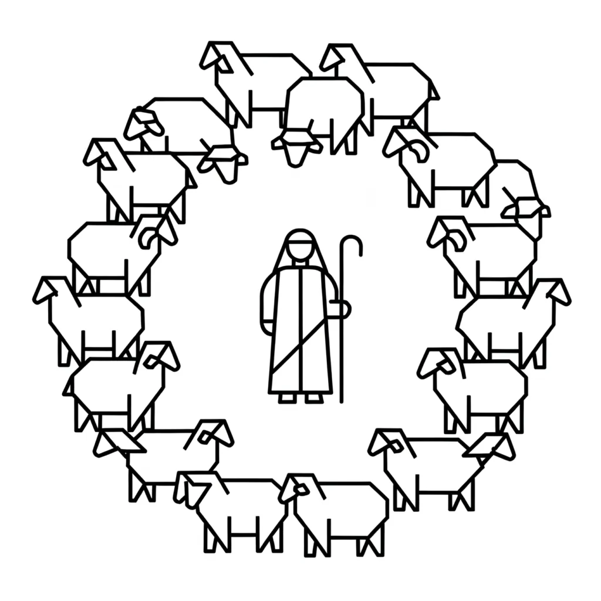

"The words of the wise are like goads, and like nails firmly fixed are the collected sayings; they are given by one Shepherd."— Ecclesiastes 12:11 ESV The 'nails firmly fixed' refer to the cleaving in Genesis 2:24 and the crucifixion.
The collected sayings refers to the "I AM", and the flock that respond it, the structure and nature of which parallels the definition of God -Elohim
The shepherd represents the imagination, the conscious faculty that leads, protects and shapes our inner world. The shepherd guides the flock (our thoughts and feelings) toward the pasture of our chosen end. In Neville’s words, “Imagination creates reality” – the shepherd never forces, but gently persuades the flock to follow a mental scene until it becomes fact.
The Shepherdess: Nurturing the Creative Substance
The shepherdess embodies the subconscious mind in its receptive, nurturing role. Just as Rebecca draws water to sustain the flock, the shepherdess draws forth from the subconscious the life-giving substance of belief. In Neville’s terminology, this “water” is the living substance of assumption impressed upon the subconscious; it germinates in silence until the outer world conforms to its invisible pattern.
The Flock: Our Thoughts and Assumptions
The flock symbolises the multitude of thoughts, feelings and beliefs that populate our consciousness. Each sheep reflects an individual assumption within the subconscious. Left unguided, the flock wanders after every stray impression; guided by the shepherd’s focus, it moves in unity toward the desired state.
"For you were straying like sheep, but have now returned to the Shepherd and Overseer of your souls." — 1 Peter 2:25 ESV
The Lamb: The Emerging State of Consciousness
Within the flock, the lamb represents a specific state of consciousness newly born or awakened. It is tender, impressionable and in need of guidance. When the shepherd (imagination) and the shepherdess (subconscious) unite their influence, the lamb grows into a strong sheep, embodying the fully realised manifestation.
How They Operate Together
-
Impress: The shepherd (imagination) creates a vivid scene and impresses it upon the shepherdess (subconscious).
-
Nourish: The shepherdess holds the assumption in her receptive depths, feeding the flock with it until every sheep knows its pasture.
-
Manifest: The flock, now well-trained and unified, journeys outward until the outer world reflects the inner vision.
By recognising the shepherd, shepherdess, lamb and flock as metaphors for imagination, subconscious and thought-forms, we grasp Neville’s central teaching: you are both the shepherd and the field. Direct your imagination, nurture your assumption, and watch your world transform.
About The Author | Elohim: God Series | Shepherd and Lamb Series